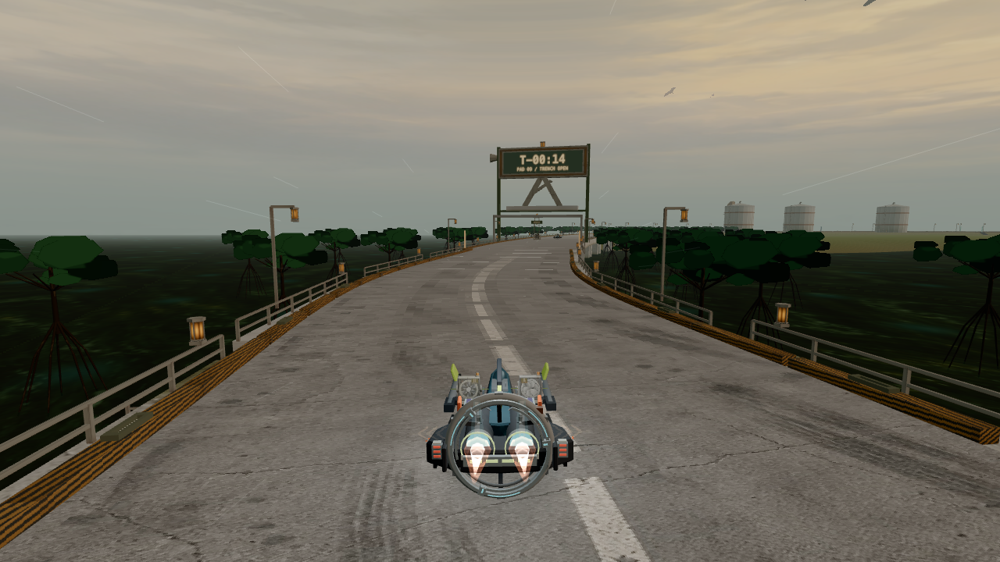
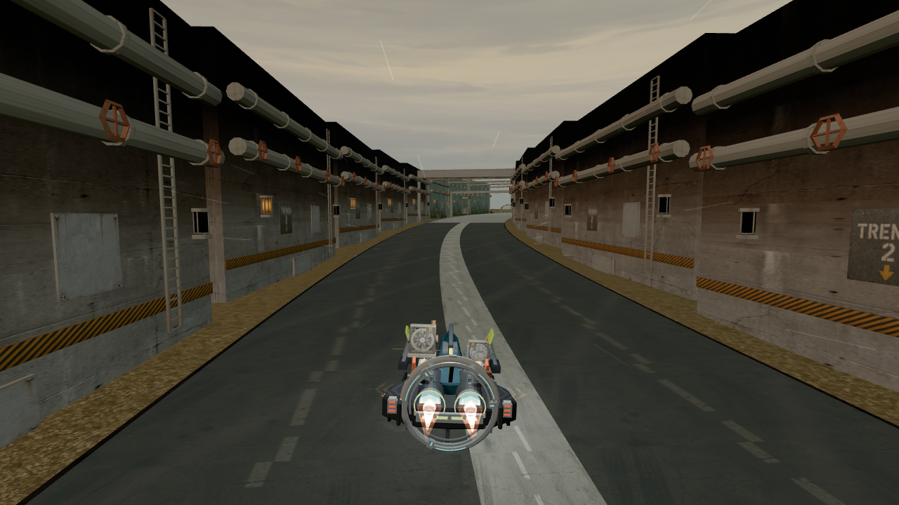
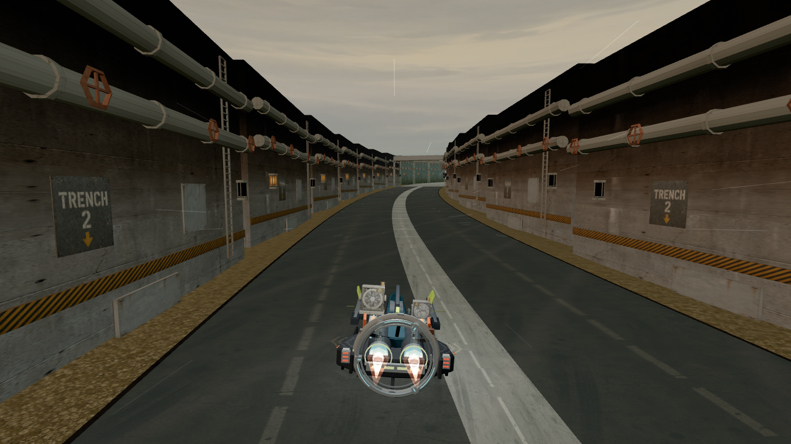
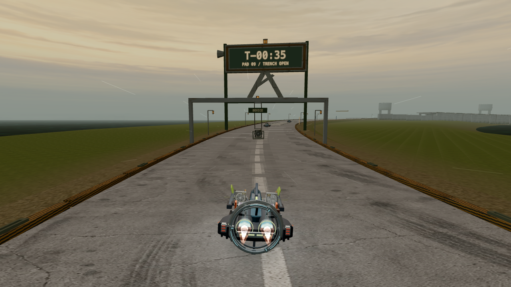
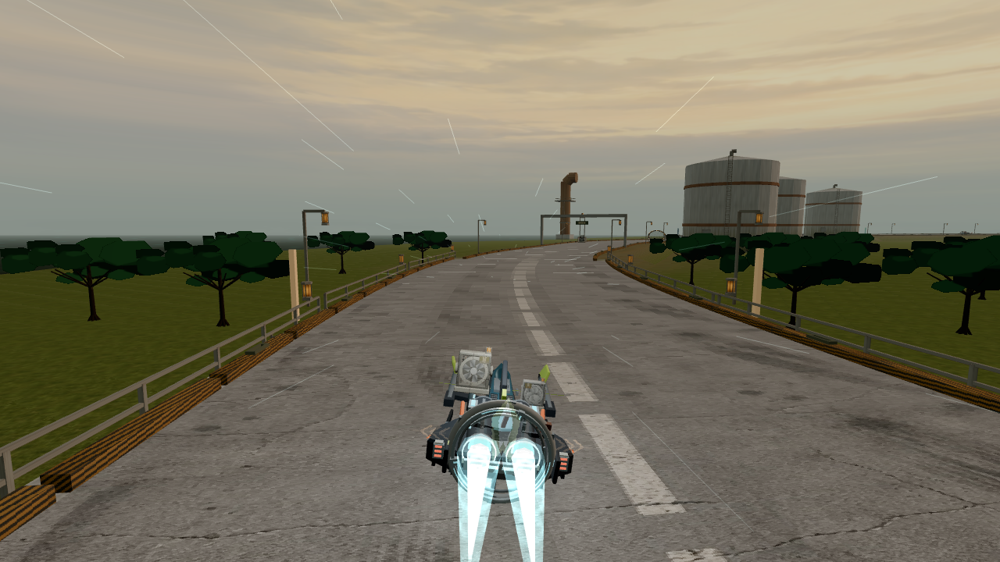
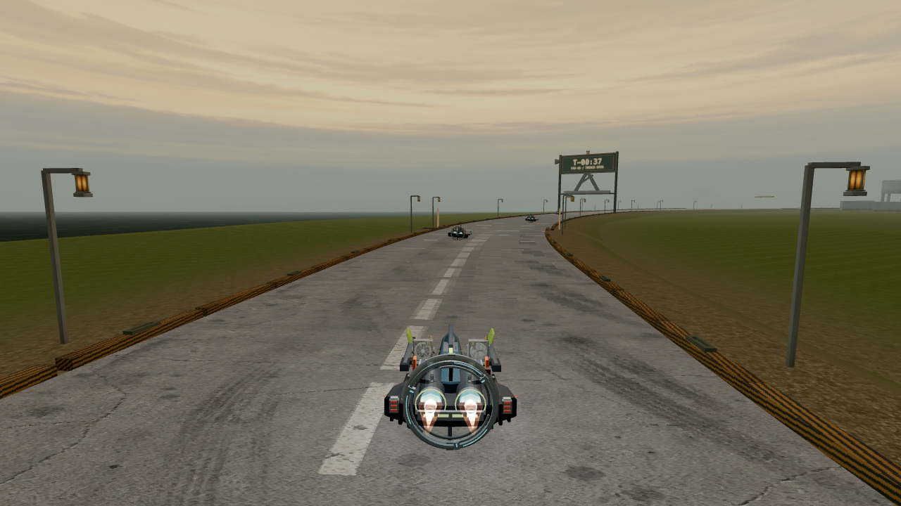
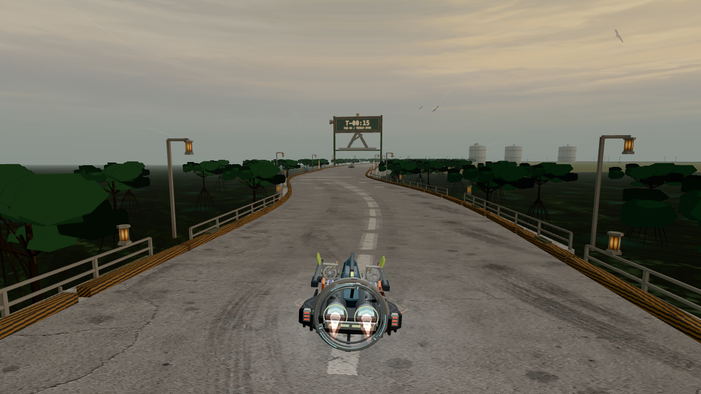
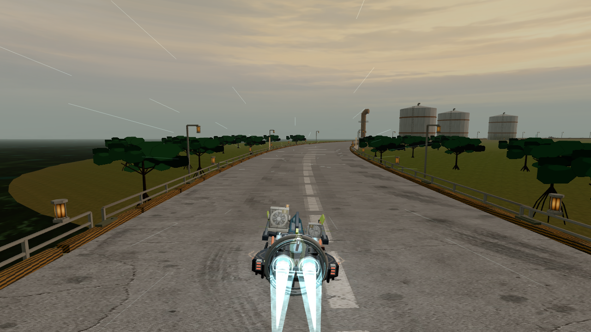

Unmodified live Works demos on both branches, normal chase camera. Sampled at 10 Hz on the 120 Hz schedule clock; actual speed is recorded, not forced to 300 km/h. This supplements the exact-speed camera recognition fixture. Capture overhead means these are not performance benchmarks. Object identities are withheld until classification.
Name the object from this single approach frame (200.5 m away), then inspect the burst.

Name the object from this single approach frame (198.8 m away), then inspect the burst.

Name the object from this single approach frame (199.3 m away), then inspect the burst.

Name the object from this single approach frame (136.2 m away), then inspect the burst.

Name the object from this single approach frame (191.7 m away), then inspect the burst.

Name the object from this single approach frame (198.8 m away), then inspect the burst.

Name the object from this single approach frame (197.4 m away), then inspect the burst.

Name the object from this single approach frame (195.1 m away), then inspect the burst.
